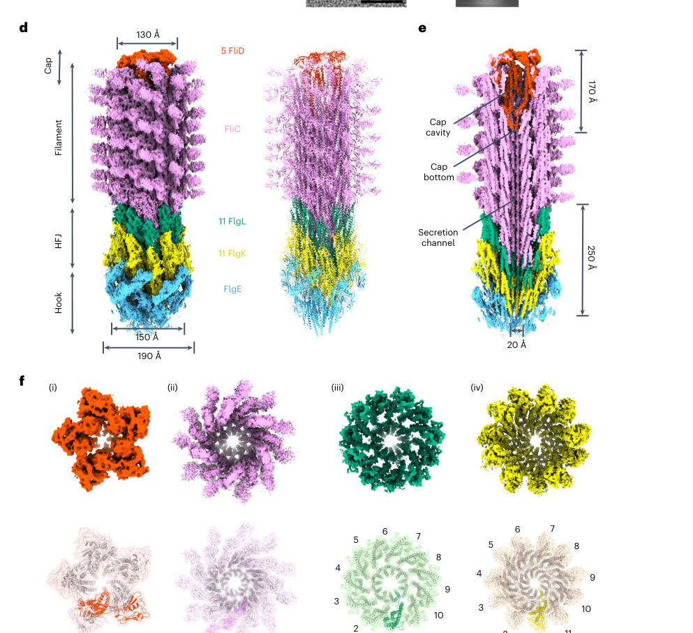

flgL encodes flagellar hook-associated protein FlgL, a structural component of the hook-filament junction of the bacterial-type flagellum in P. putida KT2440. Its core function is structural support of flagellum-dependent motility.
| GO Term | Evidence | Action | Reason |
|---|---|---|---|
|
GO:0005198
structural molecule activity
|
IEA
GO_REF:0000002 |
ACCEPT |
Summary: This is the appropriate molecular-function annotation for FlgL. FlgL is a flagellar structural protein rather than an enzyme or regulator.
Reason: Structural molecule activity is the best current MF term for a hook-associated flagellar protein. Falcon deep research confirms FlgL is a structural adaptor/mechanical element rather than an enzyme or transporter.
Supporting Evidence:
file:PSEPK/flgL/flgL-uniprot.txt
SubName: Full=Flagellar hook-associated protein FlgL
file:PSEPK/flgL/flgL-goa.tsv
GO:0005198 structural molecule activity
file:PSEPK/flgL/flgL-deep-research-falcon.md
FlgL is best understood as a **structural adaptor and mechanical element** rather than an enzyme or transporter.
|
|
GO:0005576
extracellular region
|
IEA
GO_REF:0000044 |
KEEP AS NON CORE |
Summary: Extracellular region is broadly true for an exported axial flagellar protein, but it is less informative than bacterial-type flagellum and hook annotations.
Reason: Keep as a broad location while emphasizing the specific flagellar location terms. Falcon deep research confirms FlgL acts in the extracellular flagellar structure but localizes the function more precisely to the hook-filament junction.
Supporting Evidence:
file:PSEPK/flgL/flgL-uniprot.txt
SUBCELLULAR LOCATION: Bacterial flagellum
file:PSEPK/flgL/flgL-goa.tsv
GO:0005576 extracellular region
file:PSEPK/flgL/flgL-deep-research-falcon.md
FlgL functions in the **extracellular flagellar structure**, specifically within the **hook–filament junction** between the distal hook and the proximal filament/cap region.
|
|
GO:0009288
bacterial-type flagellum
|
IEA
GO_REF:0000120 |
ACCEPT |
Summary: This location annotation is correct. FlgL is a component of the bacterial flagellum.
Reason: Retain the broad flagellum location alongside the more specific hook-filament junction annotation. Falcon deep research confirms FlgL is a conserved component of the Pseudomonas flagellar structure.
Supporting Evidence:
file:PSEPK/flgL/flgL-uniprot.txt
SUBCELLULAR LOCATION: Bacterial flagellum
file:PSEPK/flgL/flgL-goa.tsv
GO:0009288 bacterial-type flagellum
file:PSEPK/flgL/flgL-deep-research-falcon.md
flgL is a conserved member of the *Pseudomonas* flagellar gene cluster
|
|
GO:0009424
bacterial-type flagellum hook
|
IEA
GO_REF:0000002 |
MODIFY |
Summary: This imported hook annotation is close but not the most precise term for flgL. Flagellar hook-associated protein FlgL is a hook-associated protein at the hook-filament junction, and GO:0009422 bacterial-type flagellum hook-filament junction is the better cellular-component term.
Reason: Use GO:0009422 because it names the hook-filament junction, whereas GO:0009424 describes the hook proper. Falcon deep research, citing a 2.9 Angstrom cryo-EM structure, shows FlgL assembles as the distal layer of the hook-filament junction linking the FlgE hook to the FliC filament - not as a component of the hook itself - directly supporting this refinement.
Proposed replacements:
bacterial-type flagellum hook-filament junction
Supporting Evidence:
file:PSEPK/flgL/flgL-uniprot.txt
hook-associated protein
file:PSEPK/flgL/flgL-goa.tsv
GO:0009424 bacterial-type flagellum hook
file:PSEPK/flgL/flgL-deep-research-falcon.md
assembles as the **distal layer** of the HFJ, directly beneath the filament and above FlgK, thereby linking the hook protein **FlgE** to the filament protein **FliC (flagellin)**.
|
|
GO:0071973
bacterial-type flagellum-dependent cell motility
|
IEA
GO_REF:0000002 |
ACCEPT |
Summary: This process annotation is appropriate. A FlgL-containing hook-filament junction is required for a functional bacterial flagellum and flagellum-dependent motility.
Reason: Motility is the direct biological context for this structural flagellar component. Falcon deep research confirms that disrupting the FlgK-FlgL junction reduces swimming motility and filament retention.
Supporting Evidence:
file:PSEPK/flgL/flgL-uniprot.txt
SubName: Full=Flagellar hook-associated protein FlgL
file:PSEPK/flgL/flgL-goa.tsv
GO:0071973 bacterial-type flagellum-dependent cell motility
file:PSEPK/flgL/flgL-deep-research-falcon.md
interface disruption in the FlgK–FlgL junction produced measurable reductions in swimming motility and increased filament loss under shear
|
Q: Does KT2440 FlgL have a specific role in hook-filament junction stability, filament initiation, or motor load adaptation?
Experiment: Analyze flgL deletion and complemented strains by swimming assays, flagellar staining or electron microscopy, and immunodetection of exported flagellar subunits.
Hypothesis: FlgL is required to assemble a functional hook-filament junction and support flagellum-dependent motility.
Type: targeted mutant phenotype and structure assay
The research report should be a detailed narrative explaining the function, biological processes, and localization of the gene product. Citations should be given for all claims.
You should prioritize authoritative reviews and primary scientific literature when conducting research. You can supplement
this with annotations you find in gene/protein databases, but these can be outdated or inaccurate.
We are specifically interested in the primary function of the gene - for enzymes, what reaction is catalyzed, and what is the substrate specificity? For transporters, what is the substrate? For structural proteins or adapters, what is the broader structural role? For signaling molecules, what is the role in the pathway.
We are interested in where in or outside the cell the gene product carries out its function.
We are also interested in the signaling or biochemical pathways in which the gene functions. We are less interested in broad pleiotropic effects, except where these elucidate the precise role.
Include evidence where possible. We are interested in both experimental evidence as well as inference from structure, evolution, or bioinformatic analysis. Precise studies should be prioritized over high-throughput, where available.
The target described in the prompt (UniProt Q88ES3) corresponds to flgL in Pseudomonas putida KT2440, with ordered locus name PP_4380 (as provided by the user). Independent literature sources that explicitly connect PP_4380 ↔ flgL in KT2440 and place it in the canonical flagellar neighborhood were identified, reducing the risk of symbol ambiguity. In a comparative gene mapping table for Pseudomonas strains, flgL is explicitly mapped to KT2440 locus PP_4380 and occurs adjacent to other flagellar genes (e.g., flgK = PP_4381, flgJ = PP_4382), consistent with the expected hook–filament junction module. (udaondo2025transcriptionalregulatorysystems pages 18-20, udaondo2025transcriptionalregulatorysystems pages 16-18)
A dedicated KT2440 flagellar-cluster study further supports that flgL is a conserved member of the Pseudomonas flagellar gene cluster, and highlights the fliC–flgL region as a frequent breakpoint in comparative synteny analyses of the cluster, consistent with flgL’s placement near filament-related genes. (leal‐morales2022transcriptionalorganizationand pages 4-5, leal‐morales2022transcriptionalorganizationand pages 4-4)
The bacterial flagellum’s extracellular portion includes the hook, a flexible universal-joint-like structure, and the filament, a comparatively rigid helical propeller. These are connected by the hook–filament junction (HFJ), which is formed by the proteins FlgK (proximal junction protein) and FlgL (distal junction protein). A high-resolution structural study of the complete extracellular flagellum describes FlgL as a hook-associated protein that assembles as the distal layer of the HFJ, directly beneath the filament and above FlgK, thereby linking the hook protein FlgE to the filament protein FliC (flagellin). (einenkel2025thestructureof pages 2-3, einenkel2025thestructureof pages 4-5)
FlgL is best understood as a structural adaptor and mechanical element rather than an enzyme or transporter. In the HFJ, FlgL contributes to (i) creating a compatible geometric and mechanical interface between hook and filament, and (ii) enabling correct initiation/stabilization of filament assembly and cap docking. (einenkel2025thestructureof pages 10-11, einenkel2025thestructureof pages 2-3)
FlgL functions in the extracellular flagellar structure, specifically within the hook–filament junction between the distal hook and the proximal filament/cap region. Cryo-EM structures show a distinct FlgL layer immediately adjacent to FlgK and beneath the filament-cap apparatus (FliD). (einenkel2025thestructureof pages 10-11, einenkel2025thestructureof pages 2-3)
Core interaction partners and architectural contacts for FlgL at the HFJ include:
- FlgK (proximal HFJ layer), with which FlgL forms a two-layer HFJ. (einenkel2025thestructureof pages 8-9, einenkel2025thestructureof pages 2-3)
- FlgE (hook protein), to which the HFJ is anchored on the proximal side. (einenkel2025thestructureof pages 2-3, einenkel2025thestructureof pages 4-5)
- FliC (flagellin), the filament subunit that polymerizes distal to FlgL. (einenkel2025thestructureof pages 2-3, einenkel2025thestructureof pages 4-5)
- FliD (filament cap), whose stable incorporation during early filament formation is proposed to be aided by FlgL acting as an intermediate stabilizer. (einenkel2025thestructureof pages 10-11)
A recent detailed structural analysis further provides residue-level interface evidence for FlgK–FlgL contacts (example residues: FlgK Q111/Q118/D519 and FlgL I44/L260) and connects these interfaces to measurable motility/filament-stability phenotypes when perturbed by mutagenesis. (einenkel2025thestructureof pages 8-9)
The HFJ is proposed to act as a mechanical buffer that limits transmission of mechanical stress from hook motion into the filament. In a 3D-variability analysis, FlgK/FlgL (and FlgE) show substantial shifts between extended/compressed states, while the filament shows minimal shift, supporting the concept that junction elasticity protects filament integrity; FlgL is part of this buffering layer (distal HFJ). (einenkel2025thestructureof pages 8-9, einenkel2025thestructureof pages 1-2)
A high-authority cryo-EM study of the complete extracellular bacterial flagellum provides multiple quantitative constraints relevant for functional annotation of FlgL:
3.1 Stoichiometry and architecture
- The HFJ contains 11 FlgK + 11 FlgL subunits (11-mer layers), experimentally confirming a proposed 11:11 FlgK:FlgL stoichiometry. (einenkel2025thestructureof pages 2-3, einenkel2025thestructureof pages 4-5)
- The HFJ model includes 13 FlgE + 11 FlgK + 11 FlgL + 14 FliC subunits in the composite structural model. (einenkel2025thestructureof pages 2-3)
- Reported dimensions: HFJ extends ~250 Å overall; FlgK layer ~190 Å wide and FlgL layer ~150 Å wide. (einenkel2025thestructureof pages 2-3)
3.2 Cryo-EM resolutions (structural confidence)
- HFJ resolved at ~2.9 Å resolution; filament cap resolved at ~3.7 Å in the same work. (einenkel2025thestructureof pages 2-3, einenkel2025thestructureof pages 1-2)
3.3 Functional assay statistics linked to FlgL interfaces
Structure-guided mutagenesis at a FlgK–FlgL interface provides quantitative phenotype evidence:
- Single FlgL substitutions I44S and L260S show mild swimming reductions (~88% and ~97% of WT), but the double mutant I44S L260S reduces swimming more strongly (~73% of WT), consistent with partial redundancy/collective contribution to interface integrity. (einenkel2025thestructureof pages 9-10)
- A combined interface-perturbation across both proteins (FlgK D519S + FlgL I44S) reduced motility to ~77% of WT. (einenkel2025thestructureof pages 8-9)
- In a mechanical shearing assay, the FlgL I44S L260S mutant showed increased susceptibility to filament loss (WT median 3 filaments after 40× shearing vs mutant median 2). (einenkel2025thestructureof pages 8-9)
3.4 Visual structural evidence
Cropped figure panels from the cryo-EM study show the 11-subunit organization of both FlgK and FlgL layers in top view and the HFJ interface architecture. (einenkel2025thestructureof media 383e67ef, einenkel2025thestructureof media d73d0786)
Within the accessible sources in this run, the most mechanistically informative advance is a near-atomic (2.9 Å) HFJ structure that explicitly resolves the native FlgK–FlgL junction architecture, provides quantitative stoichiometry, and connects specific interface residues to motility/filament-shearing phenotypes via structure-guided mutagenesis. (einenkel2025thestructureof pages 8-9, einenkel2025thestructureof pages 2-3, einenkel2025thestructureof pages 4-5)
Despite targeted searches, peer-reviewed 2023–2024 articles directly focused on FlgL (especially in Pseudomonas putida KT2440) were not retrievable in this tool session. The report therefore relies on: (i) KT2440-specific flagellar cluster/regulation work (2022) for organism context, and (ii) a very recent high-authority structural/mechanistic flagellum study (2025) for detailed molecular function evidence, plus limited 2024 contextual material. (leal‐morales2022transcriptionalorganizationand pages 4-5, leal‐morales2022transcriptionalorganizationand pages 4-4, einenkel2025thestructureof pages 2-3, jenkins2024characterizationofnovel pages 16-21)
FlgL’s functional importance is primarily realized through its contribution to flagellar motility, which is widely used by bacteria for environmental navigation and surface-associated behaviors. In the structural-mutagenesis study, interface disruption in the FlgK–FlgL junction produced measurable reductions in swimming motility and increased filament loss under shear, which are experimentally tractable properties often used in microbiology and biotechnology to tune motility-dependent phenotypes (e.g., dispersal/transport in porous media or engineered colonization strategies). (einenkel2025thestructureof pages 8-9, einenkel2025thestructureof pages 9-10)
For KT2440 specifically, the flagellar system is organized into a large conserved cluster (59 genes) under hierarchical transcriptional control; this provides a practical framework for engineering motility by targeting specific structural modules such as the HFJ (FlgK/FlgL) while understanding broader regulatory consequences. (leal‐morales2022transcriptionalorganizationand pages 4-5, leal‐morales2022transcriptionalorganizationand pages 4-4)
A key expert-level inference emerging from the high-resolution extracellular-flagellum structure is that the HFJ is not a passive connector but a mechanically functional buffer; FlgL, as the distal HFJ layer, contributes to a deformable interface that isolates the filament from hook-derived mechanical strain. This interpretation is supported by (i) the layered architecture (11-mer FlgK and 11-mer FlgL rings), (ii) comparative conformational shifts observed in variability analysis, and (iii) mutational sensitivity of inter-layer contacts that impacts motility and filament retention. (einenkel2025thestructureof pages 8-9, einenkel2025thestructureof pages 2-3, einenkel2025thestructureof pages 1-2)
The following table consolidates identity verification and the strongest functional/structural evidence relevant to annotating FlgL (PP_4380/Q88ES3) in P. putida KT2440.
| Source row | Target identity / verification | Functional role | Localization | Key interaction partners | Quantitative / structural details | Evidence type | Citations |
|---|---|---|---|---|---|---|---|
| Gene/locus verification: Leal-Morales 2022 | In Pseudomonas putida KT2440, flgL is part of the conserved flagellar gene cluster; the cluster contains ~59 flagellar-related genes, and flgL is positioned near fliC, with the fliC–flgL region noted as a recurrent split point in some Pseudomonas genomes. Supports assignment of KT2440 flgL to the canonical flagellar locus consistent with PP_4380 / UniProt Q88ES3. | Flagellar-system component inferred from genomic context and transcriptional organization. | Flagellar cluster / motility locus in KT2440. | Genomic neighborhood includes fliC and other flagellar genes. | ~59 genes in cluster; strong synteny conservation across analyzed Pseudomonas genomes. | Comparative genomics, transcript organization analysis. | (leal‐morales2022transcriptionalorganizationand pages 4-5, leal‐morales2022transcriptionalorganizationand pages 4-4) |
| Gene/locus verification: Udaondo 2025 | Explicitly maps KT2440 locus PP_4380 = flgL; neighboring loci include PP_4381 = flgK and PP_4382 = flgJ, placing PP_4380 in the expected flagellar neighborhood and matching the UniProt target Q88ES3. | Flagellar/motility gene assignment; supports annotation as the KT2440 flgL gene. | Motility / flagella gene cluster in KT2440. | Neighboring genes flgK, flgJ, plus nearby canonical flagellar genes. | Locus-level mapping: PP_4380 (flgL), PP_4381 (flgK), orthologous to P. aeruginosa PA1087. | Database-integrative comparative annotation table. | (udaondo2025transcriptionalregulatorysystems pages 18-20, udaondo2025transcriptionalregulatorysystems pages 16-18) |
| Mechanistic/structural: Einenkel 2025 | Defines FlgL as the distal hook–filament junction (HFJ) protein that, together with FlgK, links the flexible FlgE hook to the rigid FliC filament and supports initial filament/cap assembly. | Structural adaptor and mechanical buffer at the HFJ; stabilizes the emerging filament and helps prevent transmission of mechanical stress from hook motion into the filament. | Extracellular flagellum, specifically the hook–filament junction, distal to FlgK and proximal to filament/cap. | Direct or architectural contacts with FlgK, FlgE, FliC, and the FliD cap; interface residues reported for FlgK–FlgL include FlgK Q111/Q118/D519 with FlgL I44/L260. | HFJ cryo-EM at 2.9 Å; cap at 3.7 Å; HFJ contains 13 FlgE + 11 FlgK + 11 FlgL + 14 FliC subunits; FlgK and FlgL each form 11-mer layers; HFJ ~250 Å overall, with FlgK layer ~190 Å wide and FlgL layer ~150 Å wide. Mutants reduced motility to ~73–77% of WT in stronger combinations; shearing assay median filaments after 40× shearing: WT 3 vs FlgL double mutant 2. | High-resolution cryo-EM, structure-guided mutagenesis, motility and shearing assays. | (einenkel2025thestructureof pages 8-9, einenkel2025thestructureof pages 10-11, einenkel2025thestructureof pages 2-3, einenkel2025thestructureof pages 4-5, einenkel2025thestructureof pages 9-10, einenkel2025thestructureof pages 1-2, einenkel2025thestructureof pages 14-15, einenkel2025thestructureof media 383e67ef, einenkel2025thestructureof media d73d0786) |
Table: This table summarizes verification that PP_4380 in Pseudomonas putida KT2440 corresponds to flgL/UniProt Q88ES3 and condenses the strongest structural and mechanistic evidence for FlgL’s role at the hook–filament junction. It is useful for separating organism-specific locus validation from broader conserved functional evidence.
Based on organism-specific locus mapping and cross-species conserved structural evidence, the most defensible functional annotation for P. putida KT2440 FlgL (PP_4380; UniProt Q88ES3, as provided) is:
- Function: Flagellar hook–filament junction protein; distal junction component that assembles with FlgK in an 11-mer ring/layer to connect the FlgE hook to the FliC filament and support early filament/cap stabilization and mechanical buffering. (einenkel2025thestructureof pages 10-11, einenkel2025thestructureof pages 2-3, einenkel2025thestructureof pages 4-5)
- Cellular location: Extracellular flagellum; hook–filament junction. (einenkel2025thestructureof pages 10-11, einenkel2025thestructureof pages 2-3)
- Pathway/process: Flagellar assembly and motility; located in the conserved KT2440 flagellar gene cluster. (udaondo2025transcriptionalregulatorysystems pages 16-18, leal‐morales2022transcriptionalorganizationand pages 4-5)
References
(udaondo2025transcriptionalregulatorysystems pages 18-20): Zulema Udaondo, Kelsey Aguirre Schilder, Ana Rosa Márquez Blesa, Mireia Tena-Garitaonaindia, José Canto Mangana, and Abdelali Daddaoua. Transcriptional regulatory systems in pseudomonas: a comparative analysis of helix-turn-helix domains and two-component signal transduction networks. International Journal of Molecular Sciences, 26:4677, May 2025. URL: https://doi.org/10.3390/ijms26104677, doi:10.3390/ijms26104677. This article has 1 citations.
(udaondo2025transcriptionalregulatorysystems pages 16-18): Zulema Udaondo, Kelsey Aguirre Schilder, Ana Rosa Márquez Blesa, Mireia Tena-Garitaonaindia, José Canto Mangana, and Abdelali Daddaoua. Transcriptional regulatory systems in pseudomonas: a comparative analysis of helix-turn-helix domains and two-component signal transduction networks. International Journal of Molecular Sciences, 26:4677, May 2025. URL: https://doi.org/10.3390/ijms26104677, doi:10.3390/ijms26104677. This article has 1 citations.
(leal‐morales2022transcriptionalorganizationand pages 4-5): Antonio Leal‐Morales, Marta Pulido‐Sánchez, Aroa López‐Sánchez, and Fernando Govantes. Transcriptional organization and regulation of the pseudomonas putida flagellar system. Environmental Microbiology, 24:137-157, Dec 2022. URL: https://doi.org/10.1111/1462-2920.15857, doi:10.1111/1462-2920.15857. This article has 31 citations and is from a domain leading peer-reviewed journal.
(leal‐morales2022transcriptionalorganizationand pages 4-4): Antonio Leal‐Morales, Marta Pulido‐Sánchez, Aroa López‐Sánchez, and Fernando Govantes. Transcriptional organization and regulation of the pseudomonas putida flagellar system. Environmental Microbiology, 24:137-157, Dec 2022. URL: https://doi.org/10.1111/1462-2920.15857, doi:10.1111/1462-2920.15857. This article has 31 citations and is from a domain leading peer-reviewed journal.
(einenkel2025thestructureof pages 2-3): Rosa Einenkel, Kailin Qin, Julia Schmidt, Natalie S. Al-Otaibi, Daniel Mann, Tina Drobnič, Eli J. Cohen, Nayim Gonzalez-Rodriguez, Jane Harrowell, Elena Shmakova, Morgan Beeby, Marc Erhardt, and Julien R. C. Bergeron. The structure of the complete extracellular bacterial flagellum reveals the mechanism of flagellin incorporation. Nature Microbiology, 10:1741-1757, Jul 2025. URL: https://doi.org/10.1038/s41564-025-02037-0, doi:10.1038/s41564-025-02037-0. This article has 18 citations and is from a highest quality peer-reviewed journal.
(einenkel2025thestructureof pages 4-5): Rosa Einenkel, Kailin Qin, Julia Schmidt, Natalie S. Al-Otaibi, Daniel Mann, Tina Drobnič, Eli J. Cohen, Nayim Gonzalez-Rodriguez, Jane Harrowell, Elena Shmakova, Morgan Beeby, Marc Erhardt, and Julien R. C. Bergeron. The structure of the complete extracellular bacterial flagellum reveals the mechanism of flagellin incorporation. Nature Microbiology, 10:1741-1757, Jul 2025. URL: https://doi.org/10.1038/s41564-025-02037-0, doi:10.1038/s41564-025-02037-0. This article has 18 citations and is from a highest quality peer-reviewed journal.
(einenkel2025thestructureof pages 10-11): Rosa Einenkel, Kailin Qin, Julia Schmidt, Natalie S. Al-Otaibi, Daniel Mann, Tina Drobnič, Eli J. Cohen, Nayim Gonzalez-Rodriguez, Jane Harrowell, Elena Shmakova, Morgan Beeby, Marc Erhardt, and Julien R. C. Bergeron. The structure of the complete extracellular bacterial flagellum reveals the mechanism of flagellin incorporation. Nature Microbiology, 10:1741-1757, Jul 2025. URL: https://doi.org/10.1038/s41564-025-02037-0, doi:10.1038/s41564-025-02037-0. This article has 18 citations and is from a highest quality peer-reviewed journal.
(einenkel2025thestructureof pages 8-9): Rosa Einenkel, Kailin Qin, Julia Schmidt, Natalie S. Al-Otaibi, Daniel Mann, Tina Drobnič, Eli J. Cohen, Nayim Gonzalez-Rodriguez, Jane Harrowell, Elena Shmakova, Morgan Beeby, Marc Erhardt, and Julien R. C. Bergeron. The structure of the complete extracellular bacterial flagellum reveals the mechanism of flagellin incorporation. Nature Microbiology, 10:1741-1757, Jul 2025. URL: https://doi.org/10.1038/s41564-025-02037-0, doi:10.1038/s41564-025-02037-0. This article has 18 citations and is from a highest quality peer-reviewed journal.
(einenkel2025thestructureof pages 1-2): Rosa Einenkel, Kailin Qin, Julia Schmidt, Natalie S. Al-Otaibi, Daniel Mann, Tina Drobnič, Eli J. Cohen, Nayim Gonzalez-Rodriguez, Jane Harrowell, Elena Shmakova, Morgan Beeby, Marc Erhardt, and Julien R. C. Bergeron. The structure of the complete extracellular bacterial flagellum reveals the mechanism of flagellin incorporation. Nature Microbiology, 10:1741-1757, Jul 2025. URL: https://doi.org/10.1038/s41564-025-02037-0, doi:10.1038/s41564-025-02037-0. This article has 18 citations and is from a highest quality peer-reviewed journal.
(einenkel2025thestructureof pages 9-10): Rosa Einenkel, Kailin Qin, Julia Schmidt, Natalie S. Al-Otaibi, Daniel Mann, Tina Drobnič, Eli J. Cohen, Nayim Gonzalez-Rodriguez, Jane Harrowell, Elena Shmakova, Morgan Beeby, Marc Erhardt, and Julien R. C. Bergeron. The structure of the complete extracellular bacterial flagellum reveals the mechanism of flagellin incorporation. Nature Microbiology, 10:1741-1757, Jul 2025. URL: https://doi.org/10.1038/s41564-025-02037-0, doi:10.1038/s41564-025-02037-0. This article has 18 citations and is from a highest quality peer-reviewed journal.
(einenkel2025thestructureof media 383e67ef): Rosa Einenkel, Kailin Qin, Julia Schmidt, Natalie S. Al-Otaibi, Daniel Mann, Tina Drobnič, Eli J. Cohen, Nayim Gonzalez-Rodriguez, Jane Harrowell, Elena Shmakova, Morgan Beeby, Marc Erhardt, and Julien R. C. Bergeron. The structure of the complete extracellular bacterial flagellum reveals the mechanism of flagellin incorporation. Nature Microbiology, 10:1741-1757, Jul 2025. URL: https://doi.org/10.1038/s41564-025-02037-0, doi:10.1038/s41564-025-02037-0. This article has 18 citations and is from a highest quality peer-reviewed journal.
(einenkel2025thestructureof media d73d0786): Rosa Einenkel, Kailin Qin, Julia Schmidt, Natalie S. Al-Otaibi, Daniel Mann, Tina Drobnič, Eli J. Cohen, Nayim Gonzalez-Rodriguez, Jane Harrowell, Elena Shmakova, Morgan Beeby, Marc Erhardt, and Julien R. C. Bergeron. The structure of the complete extracellular bacterial flagellum reveals the mechanism of flagellin incorporation. Nature Microbiology, 10:1741-1757, Jul 2025. URL: https://doi.org/10.1038/s41564-025-02037-0, doi:10.1038/s41564-025-02037-0. This article has 18 citations and is from a highest quality peer-reviewed journal.
(jenkins2024characterizationofnovel pages 16-21): B Jenkins. Characterization of novel protease flagellinolysin in pseudoalteromonas tunicata. Unknown journal, 2024.
(einenkel2025thestructureof pages 14-15): Rosa Einenkel, Kailin Qin, Julia Schmidt, Natalie S. Al-Otaibi, Daniel Mann, Tina Drobnič, Eli J. Cohen, Nayim Gonzalez-Rodriguez, Jane Harrowell, Elena Shmakova, Morgan Beeby, Marc Erhardt, and Julien R. C. Bergeron. The structure of the complete extracellular bacterial flagellum reveals the mechanism of flagellin incorporation. Nature Microbiology, 10:1741-1757, Jul 2025. URL: https://doi.org/10.1038/s41564-025-02037-0, doi:10.1038/s41564-025-02037-0. This article has 18 citations and is from a highest quality peer-reviewed journal.

id: Q88ES3
gene_symbol: flgL
product_type: PROTEIN
status: DRAFT
taxon:
id: NCBITaxon:160488
label: Pseudomonas putida (strain ATCC 47054 / DSM 6125 / CFBP 8728 / NCIMB 11950 / KT2440)
description: flgL encodes flagellar hook-associated protein FlgL, a structural component of the hook-filament
junction of the bacterial-type flagellum in P. putida KT2440. Its core function is structural support
of flagellum-dependent motility.
existing_annotations:
- term:
id: GO:0005198
label: structural molecule activity
evidence_type: IEA
original_reference_id: GO_REF:0000002
review:
summary: This is the appropriate molecular-function annotation for FlgL. FlgL is a flagellar structural
protein rather than an enzyme or regulator.
action: ACCEPT
reason: Structural molecule activity is the best current MF term for a hook-associated flagellar protein.
Falcon deep research confirms FlgL is a structural adaptor/mechanical element rather than an enzyme or transporter.
supported_by:
- reference_id: file:PSEPK/flgL/flgL-uniprot.txt
supporting_text: 'SubName: Full=Flagellar hook-associated protein FlgL'
- reference_id: file:PSEPK/flgL/flgL-goa.tsv
supporting_text: "GO:0005198\tstructural molecule activity"
- reference_id: file:PSEPK/flgL/flgL-deep-research-falcon.md
supporting_text: |-
FlgL is best understood as a **structural adaptor and mechanical element** rather than an enzyme or transporter.
- term:
id: GO:0005576
label: extracellular region
evidence_type: IEA
original_reference_id: GO_REF:0000044
review:
summary: Extracellular region is broadly true for an exported axial flagellar protein, but it is less
informative than bacterial-type flagellum and hook annotations.
action: KEEP_AS_NON_CORE
reason: Keep as a broad location while emphasizing the specific flagellar location terms.
Falcon deep research confirms FlgL acts in the extracellular flagellar structure but localizes the
function more precisely to the hook-filament junction.
supported_by:
- reference_id: file:PSEPK/flgL/flgL-uniprot.txt
supporting_text: 'SUBCELLULAR LOCATION: Bacterial flagellum'
- reference_id: file:PSEPK/flgL/flgL-goa.tsv
supporting_text: "GO:0005576\textracellular region"
- reference_id: file:PSEPK/flgL/flgL-deep-research-falcon.md
supporting_text: |-
FlgL functions in the **extracellular flagellar structure**, specifically within the **hook–filament junction** between the distal hook and the proximal filament/cap region.
- term:
id: GO:0009288
label: bacterial-type flagellum
evidence_type: IEA
original_reference_id: GO_REF:0000120
review:
summary: This location annotation is correct. FlgL is a component of the bacterial flagellum.
action: ACCEPT
reason: Retain the broad flagellum location alongside the more specific hook-filament junction annotation.
Falcon deep research confirms FlgL is a conserved component of the Pseudomonas flagellar structure.
supported_by:
- reference_id: file:PSEPK/flgL/flgL-uniprot.txt
supporting_text: 'SUBCELLULAR LOCATION: Bacterial flagellum'
- reference_id: file:PSEPK/flgL/flgL-goa.tsv
supporting_text: "GO:0009288\tbacterial-type flagellum"
- reference_id: file:PSEPK/flgL/flgL-deep-research-falcon.md
supporting_text: |-
flgL is a conserved member of the *Pseudomonas* flagellar gene cluster
- term:
id: GO:0009424
label: bacterial-type flagellum hook
evidence_type: IEA
original_reference_id: GO_REF:0000002
review:
summary: This imported hook annotation is close but not the most precise term for flgL. Flagellar
hook-associated protein FlgL is a hook-associated protein at the hook-filament junction, and GO:0009422
bacterial-type flagellum hook-filament junction is the better cellular-component term.
action: MODIFY
reason: Use GO:0009422 because it names the hook-filament junction, whereas GO:0009424 describes the
hook proper. Falcon deep research, citing a 2.9 Angstrom cryo-EM structure, shows FlgL assembles as
the distal layer of the hook-filament junction linking the FlgE hook to the FliC filament - not as a
component of the hook itself - directly supporting this refinement.
proposed_replacement_terms:
- id: GO:0009422
label: bacterial-type flagellum hook-filament junction
supported_by:
- reference_id: file:PSEPK/flgL/flgL-uniprot.txt
supporting_text: hook-associated protein
- reference_id: file:PSEPK/flgL/flgL-goa.tsv
supporting_text: "GO:0009424\tbacterial-type flagellum hook"
- reference_id: file:PSEPK/flgL/flgL-deep-research-falcon.md
supporting_text: |-
assembles as the **distal layer** of the HFJ, directly beneath the filament and above FlgK, thereby linking the hook protein **FlgE** to the filament protein **FliC (flagellin)**.
- term:
id: GO:0071973
label: bacterial-type flagellum-dependent cell motility
evidence_type: IEA
original_reference_id: GO_REF:0000002
review:
summary: This process annotation is appropriate. A FlgL-containing hook-filament junction is required
for a functional bacterial flagellum and flagellum-dependent motility.
action: ACCEPT
reason: Motility is the direct biological context for this structural flagellar component. Falcon deep
research confirms that disrupting the FlgK-FlgL junction reduces swimming motility and filament retention.
supported_by:
- reference_id: file:PSEPK/flgL/flgL-uniprot.txt
supporting_text: 'SubName: Full=Flagellar hook-associated protein FlgL'
- reference_id: file:PSEPK/flgL/flgL-goa.tsv
supporting_text: "GO:0071973\tbacterial-type flagellum-dependent cell motility"
- reference_id: file:PSEPK/flgL/flgL-deep-research-falcon.md
supporting_text: |-
interface disruption in the FlgK–FlgL junction produced measurable reductions in swimming motility and increased filament loss under shear
references:
- id: GO_REF:0000002
title: Gene Ontology annotation through association of InterPro records with GO terms
findings: []
- id: GO_REF:0000044
title: Gene Ontology annotation based on UniProtKB/Swiss-Prot Subcellular Location vocabulary mapping,
accompanied by conservative changes to GO terms applied by UniProt
findings: []
- id: GO_REF:0000120
title: Combined Automated Annotation using Multiple IEA Methods
findings: []
- id: file:PSEPK/flgL/flgL-uniprot.txt
title: UniProtKB entry for flgL (Flagellar hook-associated protein FlgL)
findings:
- statement: UniProt identifies flgL as Flagellar hook-associated protein FlgL and supplies function,
pathway, family, location, or GO cross-reference evidence used in this review.
- id: file:PSEPK/flgL/flgL-goa.tsv
title: QuickGO GOA annotations for flgL
findings:
- statement: The fetched GOA table contains the automated annotations reviewed for flgL.
- id: file:PSEPK/flgL/flgL-deep-research-falcon.md
title: Falcon deep research on flgL (Edison Scientific Literature)
findings:
- statement: FlgL is the distal hook-filament junction protein that, together with FlgK, links the FlgE
hook to the FliC filament; KT2440 locus PP_4380 is explicitly mapped to flgL.
reference_section_type: OTHER
supporting_text: |-
The bacterial flagellum’s extracellular portion includes the **hook**, a flexible universal-joint-like structure, and the **filament**, a comparatively rigid helical propeller. These are connected by the **hook–filament junction (HFJ)**, which is formed by the proteins **FlgK (proximal junction protein)** and **FlgL (distal junction protein)**. A high-resolution structural study of the complete extracellular flagellum describes FlgL as a **hook-associated protein** that assembles as the **distal layer** of the HFJ, directly beneath the filament and above FlgK, thereby linking the hook protein **FlgE** to the filament protein **FliC (flagellin)**.
- statement: FlgL is a structural adaptor and mechanical element, not an enzyme or transporter.
reference_section_type: OTHER
supporting_text: |-
FlgL is best understood as a **structural adaptor and mechanical element** rather than an enzyme or transporter. In the HFJ, FlgL contributes to (i) creating a compatible geometric and mechanical interface between hook and filament, and (ii) enabling correct initiation/stabilization of filament assembly and cap docking.
- statement: FlgL functions in the extracellular flagellar structure, specifically within the hook-filament
junction between the distal hook and the proximal filament/cap region.
reference_section_type: OTHER
supporting_text: |-
FlgL functions in the **extracellular flagellar structure**, specifically within the **hook–filament junction** between the distal hook and the proximal filament/cap region. Cryo-EM structures show a distinct FlgL layer immediately adjacent to FlgK and beneath the filament-cap apparatus (FliD).
- statement: The hook-filament junction contains an 11:11 FlgK:FlgL stoichiometry, with FlgL forming an
11-mer layer, resolved by cryo-EM at 2.9 Angstrom.
reference_section_type: OTHER
supporting_text: |-
The HFJ contains **11 FlgK + 11 FlgL subunits** (11-mer layers), experimentally confirming a proposed **11:11** FlgK:FlgL stoichiometry.
- statement: The hook-filament junction acts as a mechanical buffer limiting transmission of mechanical
stress from hook motion into the filament, with FlgL forming part of the buffering layer.
reference_section_type: OTHER
supporting_text: |-
The HFJ is proposed to act as a **mechanical buffer** that limits transmission of mechanical stress from hook motion into the filament. In a 3D-variability analysis, FlgK/FlgL (and FlgE) show substantial shifts between extended/compressed states, while the filament shows minimal shift, supporting the concept that junction elasticity protects filament integrity; FlgL is part of this buffering layer (distal HFJ).
- statement: Structure-guided mutagenesis of the FlgK-FlgL interface reduces swimming motility and increases
filament loss under shear, linking FlgL to flagellum-dependent motility.
reference_section_type: OTHER
supporting_text: |-
interface disruption in the FlgK–FlgL junction produced measurable reductions in swimming motility and increased filament loss under shear
core_functions:
- description: FlgL is a structural hook-associated component of the bacterial-type flagellum hook-filament
junction that supports hook-filament junction function and bacterial-type flagellum-dependent cell
motility.
molecular_function:
id: GO:0005198
label: structural molecule activity
directly_involved_in:
- id: GO:0071973
label: bacterial-type flagellum-dependent cell motility
locations:
- id: GO:0009422
label: bacterial-type flagellum hook-filament junction
- id: GO:0009288
label: bacterial-type flagellum
supported_by:
- reference_id: file:PSEPK/flgL/flgL-uniprot.txt
supporting_text: 'SubName: Full=Flagellar hook-associated protein FlgL'
- reference_id: file:PSEPK/flgL/flgL-uniprot.txt
supporting_text: 'SUBCELLULAR LOCATION: Bacterial flagellum'
- reference_id: file:PSEPK/flgL/flgL-deep-research-falcon.md
supporting_text: |-
Flagellar hook–filament junction protein; distal junction component that assembles with FlgK in an 11-mer ring/layer to connect the FlgE hook to the FliC filament and support early filament/cap stabilization and mechanical buffering.
proposed_new_terms: []
suggested_questions:
- question: Does KT2440 FlgL have a specific role in hook-filament junction stability, filament initiation,
or motor load adaptation?
suggested_experiments:
- hypothesis: FlgL is required to assemble a functional hook-filament junction and support flagellum-dependent
motility.
description: Analyze flgL deletion and complemented strains by swimming assays, flagellar staining or
electron microscopy, and immunodetection of exported flagellar subunits.
experiment_type: targeted mutant phenotype and structure assay
{kind=link}